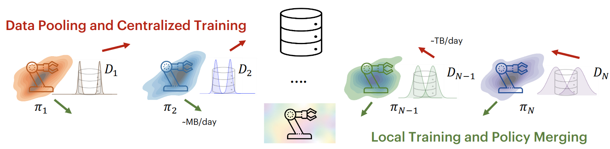
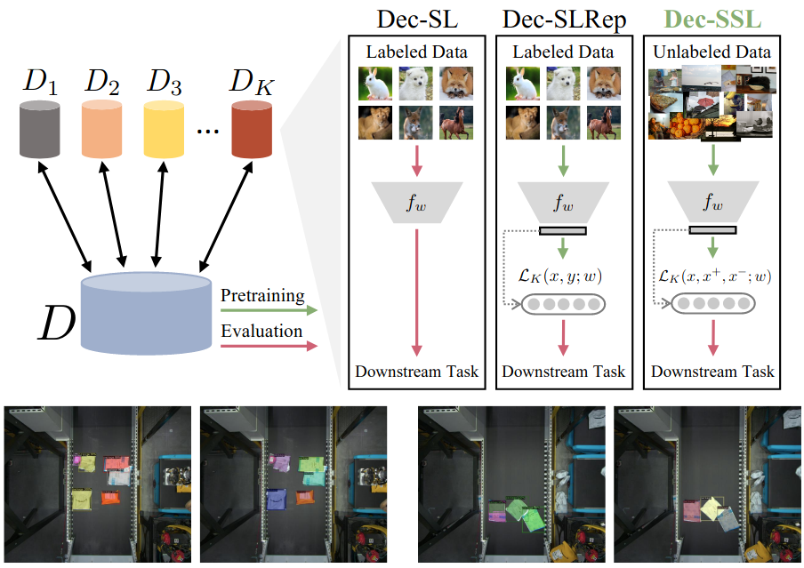
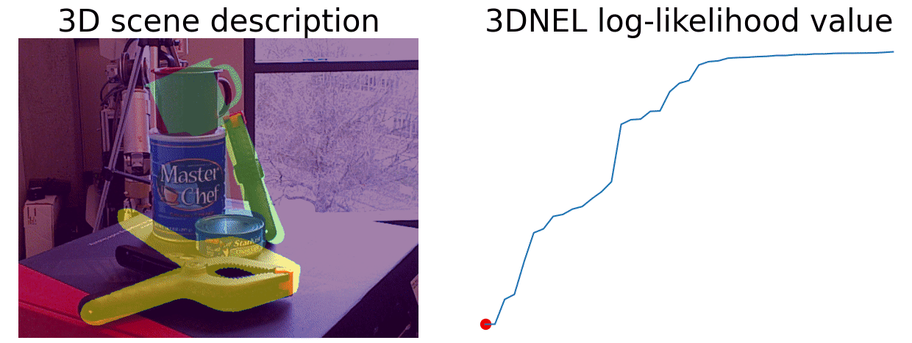

I am an undergrad at Harvard, majoring in Computer Science and Neuroscience and concurrently pursuing a Master’s in Computer Science. At Harvard's Kempner Institute for the Study of Natural and Artificial Intelligence, where I am a KURE Undergrad Research Fellow, I am advised by Prof. Samuel Gershman. At the Harvard Computational Robotics Lab, I am advised by Prof. Heng Yang. I've also completed research internships at MIT BCS with Ila Fiete and Microsoft Healthcare R&D.
My driving question is simple: how can agents plan for the unknown? I am to explore this through the lenses of optimization, reinforcement learning, and world models.
|
.edu |
Github |
|
X |
 |
Fast TRAC: A Parameter-free Optimizer for Lifelong Reinforcement Learning Aneesh Muppidi, Zhiyu Zhang, Heng Yang on Arxiv, 2024 arxiv, Bibtex , Code, Website |
 |
Resampling-free Particle Filters in High-dimensions Akhilan Boopathy, Aneesh Muppidi, Peggy Yang, Abhiram Iyer, William Yue, Ila Fiete Robotics: Science and Systems (R:SS), 2024 arxiv, Bibtex, Website, Video |
|  |
Robot Fleet Learning via Policy Merging Lirui Wang, Kaiqing Zhang, Allan Zhou, Max Simchowitz, Russ Tedrake International Conference on Learning Representations (ICLR), 2024 arxiv, Bibtex, Code, Video |
 |
GenSim: Generating Robotic Simulation Tasks via Large Language Models Lirui Wang, Yiyang Ling*, Zhecheng Yuan*, Mohit Shridhar, Chen Bao, Yuzhe Qin, Bailin Wang, Huazhe Xu, Xiaolong Wang Workshop on Language Grounding and Robot Learning (Workshop Best Paper), CoRL 2023 International Conference on Learning Representations (Spotlight) (ICLR), 2024 arXiv, Website, Demo, Code, Dataset, Video, GPTs, Bibtex |
|  |
Does Decentralized Learning with non-IID Unlabeled Data Benefit from Self Supervision?
Lirui Wang, Kaiqing Zhang, Yunzhu Li, Yonglong Tian, and Russ Tedrake International Conference on Learning Representations (ICLR), 2023 arXiv, Code, Bibtex, Video |
|  |
3D Neural Embedding Likelihood: Probabilistic Inverse Graphics for Robust 6D Pose Estimation Guangyao Zhou*, Nishad Gothoskar*, Lirui Wang, Joshua B. Tenenbaum, Dan Gutfreund, Miguel Lázaro-Gredilla, Dileep George, Vikash K. Mansinghka International Conference on Computer Vision (ICCV), 2023 arXiv, Website, Code, Bibtex |
 |
NeRF in the Palm of Your Hand: Corrective Augmentation for Robotics via Novel-View Synthesis
Allan Zhou*, Moo Jin Kim*, Lirui Wang, Pete Florence, Chelsea Finn The IEEE / CVF Computer Vision and Pattern Recognition Conference (CVPR), 2023 arxiv, Website, Bibtex |
 |
PredictionNet: Real-Time Joint Probabilistic Traffic Prediction for Planning, Control, and Simulation
Alexey Kamenev, Lirui Wang, Ollin Boer Bohan, Ishwar Kulkarni, Bilal Kartal, Artem Molchanov, Stan Birchfield, David Nistér, Nikolai Smolyanskiy International Conference on Robotics and Automation (ICRA), 2022 arXiv, Bibtex, Video, Blog, Poster |
 |
Hierarchical Policies for Cluttered-Scene Grasping with Latent Plans
Lirui Wang, Xiangyun Meng, Yu Xiang, Dieter Fox IEEE Robotics and Automation Letters (RAL), 2022 arXiv, Bibtex, Video, Poster, Website, Code |
 |
Goal-Auxiliary Actor-Critic for 6D Robotic Grasping with Point Clouds
Lirui Wang, Yu Xiang, Wei Yang, Arsalan Mousavian, Dieter Fox The Conference on Robot Learning (CoRL), 2021 arXiv, Bibtex, Video, Poster, Website, Code |
 |
Manipulation Trajectory Optimization with Online Grasp Synthesis and Selection Lirui Wang, Yu Xiang, Dieter Fox Robotics: Science and Systems (R:SS), 2020 arXiv, Bibtex, Video, Website, Code |
 |
Pose Tracking UW |
 |
Server Mover Microsoft |
 |
Auto Cooperation DJI |
{kind=link}
{kind=link}
{kind=link}